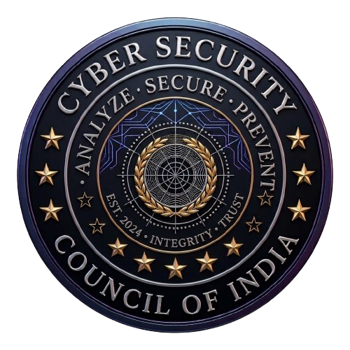

Cyber Security Council of India
CSCI.
It is a Cyber Security Forum deals with Conferences and Hackathon.
A forum concept for knowledge exchange, conferences, hackathons, responsible innovation, and collaboration across the security ecosystem.

Courses & training.
These are proposed course topics, not a claim that every course is currently scheduled. Ask CWO for current batches, prerequisites, duration, delivery mode, and fees.
- Capture-the-Flag (CTF) Foundations
- Secure Coding & Threat Modelling
- Hackathon Readiness Lab
- Security Research & Responsible Disclosure
Foundations
Build essential concepts, terminology, and safe working practices before moving into advanced topics.
Guided practice
Use controlled exercises, case studies, and practical demonstrations where appropriate.
Community projects
Apply skills to awareness resources, approved lab work, or documented product prototypes.
How this division
contributes.
Activities below describe the division's focus areas. Specific service commitments should be agreed in writing before engagement.
Conferences and panel discussions
Programme details, availability, and delivery format can be confirmed through the CWO contact channel.
Hackathons and CTF events
Programme details, availability, and delivery format can be confirmed through the CWO contact channel.
Community roundtables
Programme details, availability, and delivery format can be confirmed through the CWO contact channel.
Knowledge-sharing initiatives
Programme details, availability, and delivery format can be confirmed through the CWO contact channel.